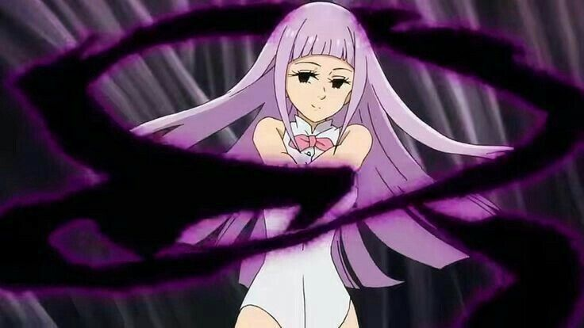

|  | BIOGRAFIA |
|---|---|
|
Melascula é um dos Dez Mandamentos demônios de elite que servem ao Rei Demônio. Conhecida como o Mandamento da Fé, ela incorpora a traição - qualquer um que demonstrar descrença em sua presença terá seus olhos queimados. Sádica e manipuladora, Melascula tem prazer especial em torturar almas e criar mortos-vivos. Com aparência de uma mulher serpentina seductora, ela esconde uma natureza cruel e covarde, fugindo quando confrontada por oponentes superiores. Suas habilidades necromânticas a tornam extremamente perigosa em campos de batalha onde há muitos mortos, transformando exércitos caídos em suas marionetes.
| |
| ARMAS | |
|
Mandamento da Fé: Maldição que queima os olhos de qualquer um que não acredite em suas palavras. Magia das Trevas: Arsenal de feitiços demoníacos destrutivos. | |
| Habilidades | |
|
Prisão Eterna no Purgatório: Pode aprisionar almas em dimensões de tormento infinito. Necromancia Avançada: Revive e controla os mortos, incluindo guerreiros poderosos que mantêm suas habilidades. Forma Serpentina: Pode transformar-se em serpentes massivas ou múltiplas cobras menores. |